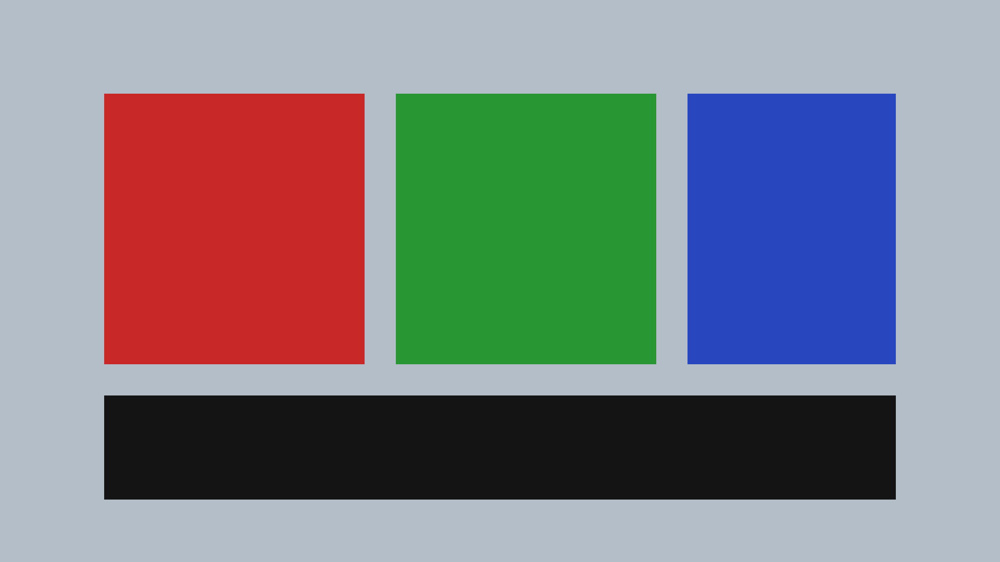
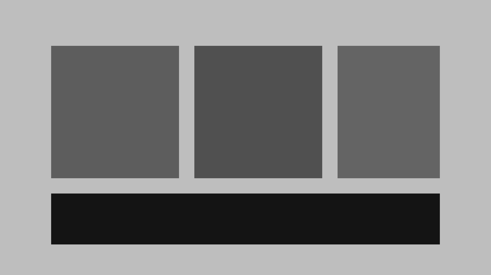
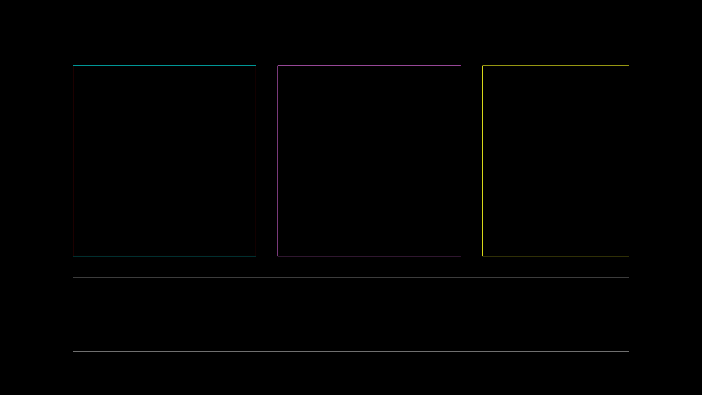
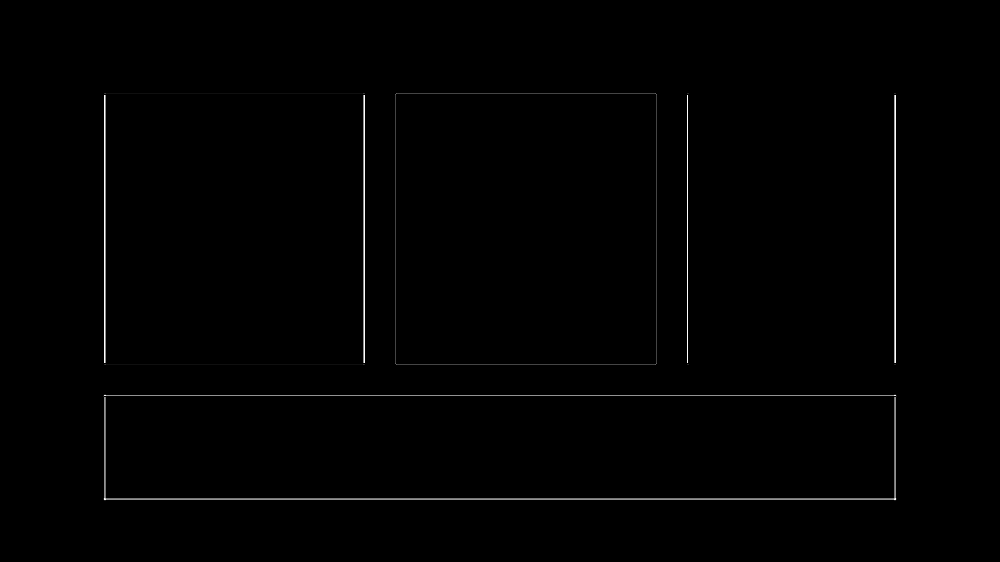

Фильтры изображений
Под первыми тремя кадрами показан один и тот же угол красного прямоугольника с увеличением 8×. Все пять фильтров поддерживают обработку по строкам в несколько потоков.




Как меняется кадр после каждой стадии
Каждый следующий фильтр получает результат предыдущего. Под кадрами увеличен один и тот же фрагмент границы.


